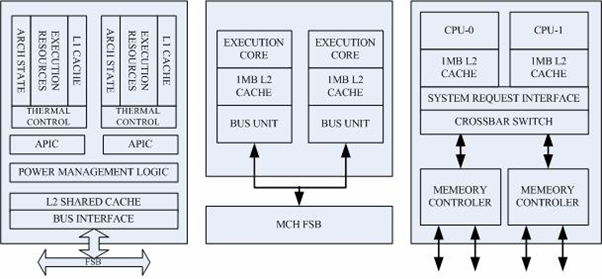

The Athlon 64x2 represents a leap in the CPUs architecture, since it was the first desktop-dedicated multi-core processor. A double core allowed the signal not to work off-chip, which means an higher clock rate.
This meant higher-quality signals, which allowed more data to be sent in a given period of time.
Furthermore, multi-core CPUs require less resources for higher performance, three example are:
-less space on the printed circuit board (since the cores share some circuitry), which leads to a lower risk of design errors.
-less power, because of the decreased request to drive signals outside of the chip
-lower energy, since every core in a multi-core CPU is more energy-efficient
All these improvements in the CPU architecture contributed to the spreading of the Athlon 64x2.
It opened a new way into the improvement of CPUs, since until its release the two known ways to improve a CPU were:
-increase the number of transistors on the same surface or reduce the surface of the integrated circuit, decreasing in this way the cost per device on the integrated circuit
-increase the clock speed, increasing in this way the speed of the CPU
While the clock speeding improvement was slowing, the multi-core processor was born, amplifying the CPUs improvement opportunities.
This means that the Athlon 64x2 was a great revolution for the CPUs market, and it was also an incentive to keep improving the CPU performance by adding more cores, in fact nowadays we have CPUs that can contain 4 or more cores.

It allowed AMD to sold more chips than Intel for the first time, thanks to that chip AMD took an advantage in the "AMD-Intel war":
during that period numerous multi-core processors were already born (the first was the IBM POWER4), but they were all applied for Workstations and servers. AMD and Intel had their server version of a multi-core processor, for example the AMD Opteron.
Both the companies were “running” to be the first company releasing a desktop multi-core CPU.
Unfortunately for Intel, the Athlon 64x2 were released first (May 2005), and this influenced negatively Intel’s work, since the company decided to accelerate in order to release as first as possible their processor. But the sudden speed up in the work brought Intel to build a processor that was worse than the Athlon 64x2 in almost every aspect: the Pentium D was born.
Intel Pentium D vs AMD Athlon 64x2
Athlon 64x2
-The Athlon architecture provides that the communications between the two cores take place using the SRI (System Request Interface), which is in charge of sending a particular processing request to the available core at a precise moment. This whole process takes place inside the processor die, avoiding the access to the external bus (the HyperTransport).
-The Athlon 64x2 maintained the same clock rate as its single-core counterpart, in this way no one noticed a drop in performance while using non-optimized applications.
Intel Pentium D
- In the Pentium D architecture the communications between the two cores take place in the HyperTransport ( an external bus, which isn’t in the processor die), which slows extremely the performance. In general we can say that the performance of the HyperTransport is worse than the performance of the SRI.
-The Pentium D requested the user to buy a new motherboard based on the chipset i955X o i945P, while to use the Athlon the user only had to make a BIOS update.
-The positive side of the Pentium D was the price, which was (for obvious reasons) less than the Athlon’s.